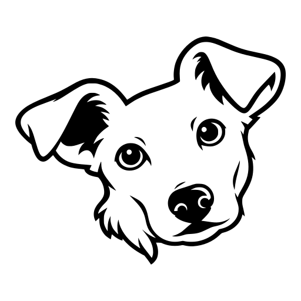

What it is
A clipboard manager for Omarchy, ported from Jumpcut, the macOS clipboard manager Steve Cook has kept alive since 2002. Press the hotkey and the last thing you copied appears in a small window. Press again for the one before. Return pastes it.
No daemon of its own, no account, nothing leaves your machine. One static Go binary.
Keys
| Key | Does |
|---|---|
| Ctrl+Alt+V, again, ↓, → | Older clipping |
| Ctrl+Alt+Shift+V, ↑, ← | Newer clipping |
| PgDn, PgUp, Home, End | Ten at a time, newest, oldest |
| 1 to 9, 0 | Jump to that position; 0 is tenth |
| Return | Copy and paste |
| Backspace, Delete | Forget this clipping |
| Esc, q | Close |
How it works
- 1A watcher records.
wl-paste --watch blanca storehands every text copy to Blanca. It keeps the last 99 in a JSON file on your machine, and skips whitespace, anything over 50,000 characters, and anything a password manager marked secret. - 2A bezel shows one thing. The hotkey opens a small floating terminal with the newest clipping and its position. It inherits your Omarchy theme and needs no GTK.
- 3Return pastes. Blanca copies the clipping, lets focus return to where you were, then sends Shift+Insert, the chord Omarchy's own tools use, so it works in terminals too.
Install
One line. The script installs the binary, icons, keybind, autostart and window rules, reloads Hyprland, and starts the watcher.
curl -fsSL https://raw.githubusercontent.com/ezapmar/blanca/master/install.sh | shOther ways
Arch package, from the AUR release binary:
git clone https://github.com/ezapmar/blanca && cd blanca/packaging/aur && makepkg -si && blanca setupFrom source:
go install github.com/ezapmar/blanca@latest && blanca setupRuntime dependencies are wl-clipboard, wtype and xdg-terminal-exec, all part of Omarchy.
Configure
Edit ~/.config/blanca/config.json. Every key is optional.
{
"remember": 99,
"display": 10,
"wraparound": false,
"paste": true,
"paste_mode": "shift-insert",
"move_to_top": false,
"allow_whitespace": false,
"ignore_large": true,
"ignore_sensitive": true
}paste_mode can be ctrl-v for the apps that ignore Shift+Insert. paste: false only copies.
Honest limits
- Text only. Images and files are not recorded.
- Tested on Omarchy with Hyprland. Other wlroots compositors need their own keybind and floating rule.
- Wayland hands Blanca the text, not the window it came from, so there is no per-application ignore list.
- This is v0.1. Expect edges.

Copy twice. Lose nothing. Press the key.
MIT licensed. Jumpcut is MIT licensed too; its notice is reproduced in the repository's LICENSE. Blanca is independent and not affiliated with the Jumpcut author or with Omarchy.